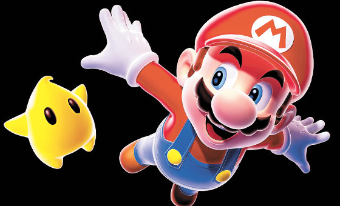

Personaje: Mario
Creador: fue diseñado por el japonés Shigeru Miyamoto.
Compañia: Nintendo.
Primera aparicion: el mundo conoció a Mario (o Jumpman, primer nombre del personaje) en el juego Donkey Kong de 1981. En aquel título la tarea de Mario era rescatar a una mujer que había sido capturada por el gorila Donkey Kong. A ésta le surgió una secuela llamada Donkey Kong Jr., en 1982, donde los papeles se invirtieron y Mario fue el villano al tener preso al gorila haciendo que su hijo de Donkey Kong tuviera que rescatarlo.
Actualmente Mario es una de las figuras más importantes en el mundo gamer y sin duda de los más reconocidos y queridos. Su profesión es fontanero y entre las cosas que lo definen están su overol y su gorra.
